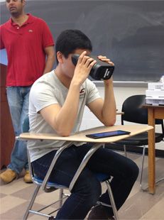

Internships & Careers

Guest Speaker: EyeNetra
Wednesday, February 19, 2014
12 - 1 pm, Anderson 212
Come listen to guest speaker Jayanth Shivaprakash talk about how his entrepreneurial journey led him to join an MIT startup called EyeNetra! EyeNetra is developing a product aimed at revolutionizing vision diagnostics. For more information, visit their website.
Mr. Shivaprakash and the EyeNetra team will be conducting user testing on people who attend to listen to him speak. Pizza will be served! Check out our event on Facebook.
Company Tour: MC10
Thursday, November 14, 2013
4 - 6 pm, MC10
Located in the neighboring city of Cambridge, MA, MC10 develops a variety of electronics for medical applications. Some of the technology that MC10 develops includes implantable electronics and catheters with sensors. To learn more, check out their website. If you want to go on the tour, sign up here!